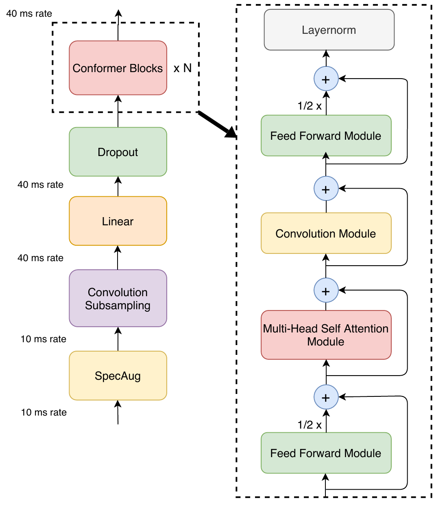

On this page
Convolution plus attention for speech recognition, and the variants that rewired it
Speech enters as filterbank frames, is shortened in time, then passes through a stack of identical blocks that mix attention and convolution; a head turns each frame into text scores.
An ASR (automatic speech recognition) model has to capture both a short sound and the whole sentence. A phoneme, one distinct sound of a language, lasts from under 18 ms to over 150 ms on average in the TIMIT corpus (Toledano et al. 2018). Transformers catch global context but blur local detail like phoneme edges and formants (the resonant bands that give each vowel its identity); CNNs do the reverse. The Conformer (Gulati et al., 2020), a "convolution-augmented transformer," takes both.
The Conformer is an encoder architecture, not a training method. The speech recognition loss on its output (CTC, written out in Conformer in PyTorch: Training and Streaming; the paper uses a one-layer LSTM transducer decoder) trains all of its weights together, batch by batch. At inference the same forward pass runs once per utterance, or chunk by chunk when streaming (Conformer in PyTorch: Training and Streaming).
Unlike text tokens, speech is a continuous waveform, typically sampled at 16 kHz, so the first job is turning it into features (Figure 2): usually 80-dim filterbank frames, the energies in 80 frequency bands on the mel scale (a pitch scale spaced by how pitch is perceived), each over a 25 ms window, a new frame every 10 ms (the features are built step by step in MFCC and Other Audio Features). A projection to the model dimension then does the job an embedding layer does for text. The whole recording the model takes in at once is one utterance.
import torch, torchaudio
kaldi = torchaudio.compliance.kaldi
# 1 s of audio at 16 kHz
wave = torch.randn(1, 16000)
fbank = kaldi.fbank(wave, num_mel_bins=80)
# (98, 80): 98 frames x 80 bands
# the last 25 ms window must fit
# in 1 s, so 98 (about 100/s)Before the blocks, the encoder (the part that reads the frames and turns them into learned representations) shrinks time with a convolution subsampling layer.
Strided subsampling folds each group of s neighboring frames, the stride, into one wider output frame, so T frames become T/s. A common implementation (ESPnet's Conv2dSubsampling) stacks two 3 by 3 stride-2 convolutions, 4× in total, so each frame then covers 40 ms. This listing is the one-layer version: a Conv1d whose kernel and stride are both s turns 98 frames into 49.
import torch, torch.nn as nn
fbank = torch.randn(98, 80)
s = 2
sub = nn.Conv1d(80, 256, s, stride=s)
# Conv1d wants (B, channels, T)
x = fbank.T.unsqueeze(0)
# (1, 256, 49) to (1, 49, 256)
y = sub(x).transpose(1, 2)Why shrink time? Attention scores every frame against every other, so its cost grows with T2 at 100 frames a second, and merging neighbors cuts it by the merge factor squared.
40 frames in
20 frames out
Figure 3. Folding cuts attention cost; a sound shorter than a fold can vanish.
A Conformer block keeps the Transformer's attention, adds a convolution module after it, and splits the feed-forward into two halves around both.

Figure 4. From the paper's Figure 1: "Conformer encoder model architecture. …" arXiv:2005.08100
Transformer block
Conformer block
The two halves are a macaron-style feed-forward network: the attention and convolution modules sit between them like the filling in a macaron. They add capacity and non-linearity but don't mix across time, and each is scaled by half so the pair matches the one FFN of a vanilla transformer.
The block is five residual lines, one per stage. In them, x is the input frame vector and x̃, x′, x″, x‴ are the frame after each stage (Figure 6).
Figure 6. Each module adds to the frame; its shape never changes.
The first FFN is a 2-layer MLP (multilayer perceptron) applied to each frame on its own, as the card below gives.
The input is a batch of frames, each a 256-dimensional vector, and attention runs as on the Attention page, with queries, keys and values mixed by softmax weights in 4 heads of 64 dimensions each.
Unlike a vanilla transformer, which adds absolute position encodings (sine and cosine waves, see Position and Masking) to each input, Conformer uses relative positions, which generalize better to long sequences and relative timing. Speech is shift-invariant: a "ba" at 1 second and at 10 seconds should be treated the same.
So the inputs stay untouched and the score gains a bonus for the distance between two frames. The paper uses Transformer-XL's sinusoidal relative encoding; this page shows the simpler learned-table version, one vector per offset up to a maximum distance, shared across heads.
The score in PyTorch, for a batch of B utterances of T frames: content is the first eq line, position the second, and rel is the learned table of offset vectors, clipped at 32 frames.
import torch, torch.nn as nn
B, H, T, dk, max_rel = 8, 4, 100, 64, 32
# each (B, H, T, dk)
q, k, v = torch.randn(3, B, H, T, dk)
rel = nn.Embedding(2 * max_rel + 1, dk)
pos = torch.arange(T)
off = (pos[:, None] - pos[None, :]).clamp(-max_rel, max_rel)
# (T, T, dk), a vector per offset
r = rel(off + max_rel)
content = q @ k.transpose(-2, -1)
position = (q[:, :, :, None] * r).sum(-1)
score = content / dk**0.5 + position
out = score.softmax(-1) @ vFigure 7. Relative positions track distance; absolute ones track the clock.
The convolution module is a depthwise separable convolution (see Efficient CNNs: MobileNet and EfficientNet) that models local structure explicitly. Convolution itself, a small filter slid along the signal, is taught in Convolutions and Receptive Fields; the depthwise separable form comes from MobileNet.
The depthwise kernel size k sets how many neighboring frames each output sees: raising it widens that local window at more compute per frame, lowering it narrows the window, and k = 1 removes the time mixing entirely. Conformer (M) uses 32 (the paper's Table 1).
Each output frame of the depthwise convolution (kernel 31 in the PyTorch ports of Conformer in PyTorch: Training and Streaming, 32 in the paper) sees a local window of input frames, its receptive field. 'Same' padding keeps the length unchanged.
The Conformer uses LayerNorm before each module and BatchNorm right after the depthwise convolution (section 2.2 of the paper), because batch statistics help the convolution train but break on the short chunks of streaming (Conformer in PyTorch: Training and Streaming). The two norms are taught in The Transformer Block and CNN Architectures and Building Blocks. A Swish then lets small negative values through instead of clipping them to zero.
After BatchNorm and Swish, a second pointwise convolution (the last boxes of Figure 8) with dropout (randomly zeroing values in training) maps the model dimension back to itself, and a residual joins the module's start to its output.
After the convolution module, a second half-strength feed-forward with its residual completes the macaron. Same shape in, same shape out, so blocks stack.
The two modules split the work over time. The conv reads a fixed window of neighbors, 31 taps or about 1.2 s at 40 ms frames, and attention reads the whole utterance (Figure 9).
bars sum to 1.0 at every probe position
Figure 9. The conv sees nearby frames; attention reaches similar ones.
The whole block as four PyTorch classes, trained with CTC, is in Conformer in PyTorch: Training and Streaming.
The paper's reported models, all trained and scored on LibriSpeech, a standard dataset of read speech with its text (Figure 10). Here d is the model dimension; all three Conformers use a convolution kernel of 32 taps (filter weights, one per frame the filter covers):
The Transformer transducer streams text as audio arrives, with no convolution; ContextNet (L) is the strongest convolution-only baseline. WER is word error rate, lower is better, scored on test-clean (cleaner, easier recordings) and test-other (harder ones), with no external language model.
The medium Conformer, at 30.7M params, already beats the 139M-param transformer transducer.
The paper's ablation (Table 3) starts from Conformer (L) and removes one feature per row (Figure 12); the authors single out the convolution block as the most important (section 3.4.1).
The convolution module is cheap. Its two pointwise projections hold about 3d² parameters per block, about 3.1M of Conformer (M)'s 30.7M.
Both keep local convolution and global attention and change how they are wired or how long a sequence attention sees. Streaming the Conformer itself, with training on random chunk sizes, is in Conformer in PyTorch: Training and Streaming.
The Branchformer (Peng et al., ICML 2022) replaces the FFN-attention-conv-FFN order with two parallel branches per layer: self-attention for long range and a conv-gated MLP (an MLP whose output a convolutional gate controls) for local detail, combined by learned merge weights. It matches or beats Conformer.
The Squeezeformer (Kim et al., NeurIPS 2022) replaces the macaron layout with attention, feed-forward, convolution, feed-forward blocks and adds a Temporal U-Net, which downsamples the timeline for attention and upsamples it back (Figure 13), for the same accuracy at lower compute.
How do you write, train and stream this block? Conformer in PyTorch: Training and Streaming does all three.